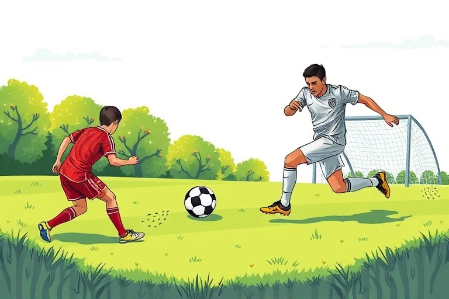

A Beginner’s Guide to Football Rules, Field Layout, and Essential Skills
Category: football | Language: en
Football, known as soccer in many parts of the world, is a game defined by its simplicity and flow. This guide is designed for absolute beginners who are either stepping onto the pitch for the first time or watching their first full match. Understanding the structure of the game is the first step toward enjoying it. The primary objective is straightforward: two teams compete to move a round ball into the opponent's goal using any part of their body except their hands and arms. By learning the specific regulations regarding player positions, match duration, and ball handling, you will quickly move from a confused spectator to a knowledgeable participant.
A standard football match is played on a rectangular pitch, usually made of natural grass or artificial turf. Each team fields 11 players, including one designated goalkeeper. The goalkeeper is unique because they are the only player permitted to use their hands and arms to touch the ball, but this privilege is strictly limited to their own penalty area—the large box surrounding the goal. The other ten players are known as outfield players and are generally categorized into defenders, midfielders, and forwards. While these players have specific tactical roles, the rules of the game apply to them equally, meaning any outfield player can score a goal or defend their own net as long as they do not use their hands.
Professional football matches are 90 minutes long, split into two 45-minute halves with a 15-minute interval known as halftime. Unlike sports where the clock stops for every interruption, the football clock runs continuously. To account for time lost due to injuries, substitutions, or goal celebrations, the referee adds 'stoppage time' to the end of each half. A goal is only officially recorded when the entire ball completely crosses the goal line between the posts and under the crossbar. If even a small sliver of the ball is still touching the line, play continues. This clear-cut definition prevents disputes over whether a ball 'almost' went in.
The rules regarding fouls and misconduct are essential for player safety and fair play. A foul occurs when a player trips, kicks, pushes, or holds an opponent, or handles the ball intentionally. When a foul is committed, the referee awards a free kick to the opposing team from the spot where the incident occurred. If a particularly rough or unsporting foul happens, the referee may show a yellow card as a formal caution. If a player receives two yellow cards in a single match, they are shown a red card and must leave the field immediately, and their team cannot replace them. A direct red card can also be issued for dangerous play, such as a high-speed tackle with studs showing.
Restarts are specific procedures used to get the ball back into play after it has left the pitch. If the ball crosses the side touchlines, it is restarted with a throw-in. To perform this correctly, you must stand with both feet on the ground and throw the ball with both hands from behind and over your head. If the ball goes over the end line (the goal line) and was last touched by the attacking team, a goal kick is awarded to the defense. However, if the ball went out off a defender, the attacking team receives a corner kick. Corner kicks are significant scoring opportunities because they allow a player to loft the ball directly into the crowded penalty area from the corner of the pitch.
The offside rule is often the most challenging concept for beginners to grasp, but it exists to prevent 'goal-hanging' or waiting for long passes behind the defense. A player is in an offside position if any part of their head, body, or feet is in the opponents' half and closer to the opponents' goal line than both the ball and the second-to-last opponent (the goalkeeper is usually the last, making the last defender the second-to-last). Being in this position is only a foul if a teammate passes you the ball or if you interfere with an opponent. A practical way to avoid being offside is to always keep your eyes on the last defender and ensure you do not run past them until the moment the ball is actually kicked toward you.
Developing technical skills starts with mastering the 'push pass' and basic ball control. To execute a push pass, place your non-kicking foot next to the ball, pointing exactly where you want the ball to go. Turn your kicking foot outward and strike the center of the ball with the flat, inside part of your foot. This technique provides the highest level of accuracy for short to medium distances. When the ball is passed to you, do not let it bounce off your foot; instead, 'cushion' it by slightly withdrawing your foot upon contact. This absorbs the ball’s momentum, keeping it close to your body so you can quickly look up and find your next teammate.
Dribbling is the skill of moving with the ball while maintaining close control to prevent defenders from stealing it. As a beginner, you should practice taking small, frequent touches with the 'laces' or the outside of your foot. A common mistake is kicking the ball five meters ahead and running after it, which makes it easy for an opponent to intercept. To improve your control, set up a row of markers, such as cones or water bottles, two meters apart. Practice weaving through them in a figure-eight pattern, using both your left and right feet. Your goal should be to keep the ball within one step of your body at all times, allowing you to change direction instantly if a defender approaches.